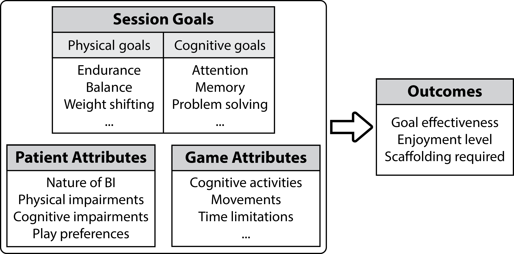
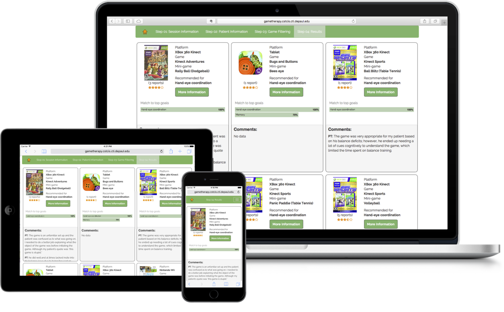

Support Game Use for Brain Injury Rehabilitation
Motivation
Brain injury (BI) is a major health issue in many societies. People who have had a BI exhibit a wide range of physical and cognitive disabilities and have varied recovery paths.
It can be challenging to motivate patients who have had a BI to engage in repetitive activities needed for BI rehabilitation. As a result, it is common for therapists use games to help motivate patients. However, in exploratory research, we found that therapists had difficulty to find pertinent information about games and systems to guide selection of appropriate and therapeutically effective games.
Research Outcomes
A knowledge-base about game use in BI therapy sessions
The knowledge-base is comprised of more than 700 game therapy cases from therapists' accounts of game use that are collected from over 400 brain injury rehabilitation sessions. Each game therapy case describes a particular situation in which a game is used with a patient to address certain therapeutic goals. See the figure below for summary attributes of a case.
To construct the knowledge-base of game therapy cases, we collaborated with therapists at two rehabilitation hospitals in the Chicago area and conducted diary studies in which therapists recorded detailed information about therapy sessions and evaluated the games used. See the paper diary form we used.
A decision and information sharing tool to support game selection
We created a decision and information sharing tool to help therapists make evidence-based choices of games, customized for each patient. The tool adopts a Case-Based Reasoning methodology to provide game recommendations for user inputs about therapy goals and patient attributes.
We coded the backend algorithm in Java and built a responsive interface using the Bootstrap framework. See the image below for the result screens. Follow the link to watch a demo video of the tool. The tool can be accessed at http://tinyurl.com/TherapyGameR.
We followed a user-driven approach to create and evaluate the tool through multiple but overlapping phases:
- Therapist interviews that exposed the needs and requirements of a tool for choosing games for brain injury rehabilitation.
- Observations of therapy sessions to understand the context of game use in therapy.
- Usability studies to establish the user interaction of the tool.
- User evaluation of a working prototype which also allowed therapists contribute to strengthen the game recommendations and add to the shared information.
Related Publications (email me if you would like a copy)
- Putnam, C., Cheng, J., Lin, F., Yalla, S., & Wu, S. (2016). “Choose a Game”: Creation and Evaluation of a Prototype Tool to Support Therapists in Brain Injury Rehabilitation. In Proceedings of the 2016 CHI Conference on Human Factors in Computing Systems - CHI ’16 (pp. 2038–2049). New York, New York, USA: doi:10.1145/2858036.2858258 (Acceptance Rate: 23%)
- Cheng, J., & Putnam, C. (2016). “Choose a Game”: A Prototype Tool to Support Therapists Use Games in Brain Injury Rehabilitation. In Proceedings of the 2016 CHI Conference Extended Abstracts on Human Factors in Computing Systems - CHI EA ’16 (pp. 3659–3662). New York, New York, USA: doi:10.1145/2851581.2890240 (Demo)
Watch demo video - Cheng, J., & Putnam, C. (2015). Therapeutic Gaming in Context: Observing Game Use for Brain Injury Rehabilitation. In Proceedings of the 33rd Annual ACM Conference Extended Abstracts on Human Factors in Computing Systems - CHI EA ’15 (pp. 1169–1174). New York, New York, USA: doi:10.1145/2702613.2732697 (Poster - Acceptance Rate: 41%)
Download poster - Putnam, C., & Cheng, J. (2014). Therapist-centered requirements: A multi-method approach of requirement gathering to support rehabilitation gaming. In Proceedings of the IEEE 22nd International Requirements Engineering Conference (RE 2014) (pp. 13–22). IEEE. doi:10.1109/RE.2014.6912243 (Acceptance Rate: 27%)
- Putnam, C., Cheng, J., & Seymour, G. (2014). Therapist Perspectives: Wii Active Videogames Use in Inpatient Settings with People Who Have Had a Brain Injury. Games for Health Journal, 3(6), 366–370. doi:10.1089/g4h.2013.0099
- Putnam, C., Cheng, J., Rusch, D., Berthiaume, A., & Burke, R. (2013). Supporting therapists in motion-based gaming for brain injury rehabilitation. In CHI ’13 Extended Abstracts on Human Factors in Computing Systems (CHI EA '13) (pp. 391–396). New York, NY, USA: doi:10.1145/2468356.2468426 (Poster - Acceptance Rate: 46%)
Download poster